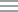

<header>
    <nav class="navbar">
       <ul>
        <li><a routerLink="/home"></a></li>
        <li class="li-banner-font">|</li>
        <li class="li-banner-font">MACTS 2.0</li>
        <!-- <li *ngIf="userService.isUserLoggedIn()" class="li-font"><a routerLink="/search">Search</a></li>
        <li *ngIf="userService.isUserLoggedIn() && userService.role=='ROLE_ADMIN'" class="li-font"><a routerLink="/admin">Admin</a></li> -->
      </ul>
      <ul class="menu-right" *ngIf="userService.isUserLoggedIn()">
        <li></li>
        <li class="li-font">{{now | date:'HH:mm:ss'}}</li>
        <li></li>
        <li class="li-font">{{city}}</li>
        <li></li>
        <li class="li-font">{{userService.username}}</li>
        <!-- <li></li> -->
        <!-- <li class="li-font"><a (click)="userService.logout()" class="nav-link">Logout</a></li> -->
        <li></li>

        <li>

          <!-- <button mat-button [matMenuTriggerFor]="mainmenu"><i class="material-icons prefix"></i></button> -->
         
          <mat-menu #mainmenu="matMenu" xPosition="before">
            <button mat-menu-item routerLink="/search">Search</button>
            <button mat-menu-item routerLink="/admin">Admin</button>
            <button mat-menu-item [matMenuTriggerFor]="conflict_checking">Conflict Checking</button>
            <button mat-menu-item [matMenuTriggerFor]="crossing">Crossing</button>
            <button mat-menu-item routerLink="/logout">Logout</button>
          </mat-menu>
          
          <mat-menu #conflict_checking="matMenu" xPosition="before">
            <button mat-menu-item routerLink="/preconfcheck">Preliminary Conflic Check</button>
            <button mat-menu-item>Conflict Check Request</button>
          </mat-menu>
          
          <mat-menu #crossing="matMenu" xPosition="before">
            <button mat-menu-item>Crossing Request</button>
            <button mat-menu-item>Crossing Request 2</button>
            <button mat-menu-item>Crossing Request 3</button>
          </mat-menu>

        </li>
      </ul>
    </nav>

    
  </header>
